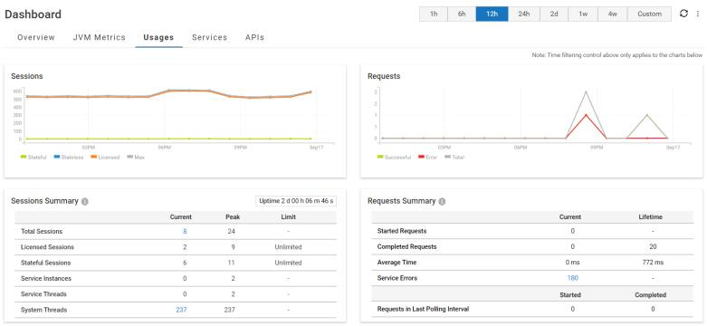

Usages
The Usages tab displays the server usage statistics. You can view the consolidated sessions and requests data from all the nodes in a cluster.
 Sessions
SessionsIf the local instance of Integration Server is part of a cluster, the Sessions graph shows data from all nodes in the cluster.
Note:
The sessions data includes sessions started by users and Integration Server internally.
Stateful: The number of stateful sessions started in the polling interval.
Stateless: The number of stateless sessions started in the polling interval.
Licensed: The number of licensed sessions started in the polling interval.
Max: The number of total sessions started in the polling interval.
Requests If the local instance of Integration Server is part of a cluster, the Requests graph shows data from all nodes in the cluster.
Request metrics relate to invocations of only the top-level services. Requests to other services by the top-level services are not included.
Successful: The number of requests successfully completed in the time interval.
Error: The number of failed requests in the time interval.
Total: The total number of requests completed in the time interval. Total requests are equal to the sum of Successful and Error requests.
Sessions Summary The Uptime field shows the time elapsed since the server started. The table displays the following statistics:
Total Sessions
Licensed Sessions
Stateful Sessions
Service Instances
Service Threads
System Threads
For each of these rows, the table displays:
The Current column displays the number of sessions currently active.
The Peak column displays the highest number of sessions that have ever run concurrently on the server.
The Limit column displays the maximum number of sessions that can run concurrently on the server. This is available only for Licensed Sessions and Stateful Sessions.
Note:
The Sessions Summary table shows data only from the local instance unlike the Sessions graph, which shows data from all the nodes in the cluster if the local instance is clustered.
Requests Summary Requests Summary metrics relate to invocations of only the top-level services. Metrics related to requests from top-level services to other services are not included in the requests summary.
If the local instance of Integration Server is part of a cluster, the Requests graph shows data from all nodes in the cluster.
The Requests Summary table displays the request metrics in two tables. The first table has two columns: Current and Lifetime. The Current column shows metrics for the current polling interval, and the Lifetime column shows metrics from the time the server was started.
Started Requests: This row shows the number of requests that were started for the corresponding time periods.
Completed Requests: This row shows the number of requests that have been completed by the server for the corresponding time periods.
Average Time: This row shows the average time (ms) taken to complete a request the corresponding time periods.
Service Errors: This row shows the total number of requests that ended unsuccessfully during the current log interval since the Error Log was rotated.
The second table in Requests Summary has two columns: Started and Completed.
Requests in the Last Polling Interval: This row shows the number of requests started and completed respectively for the last polling interval.
Note:
The Requests Summary table shows data only from the local instance unlike the Requests graph, which shows data from all the nodes in the cluster if the local instance is clustered.